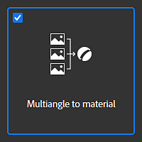
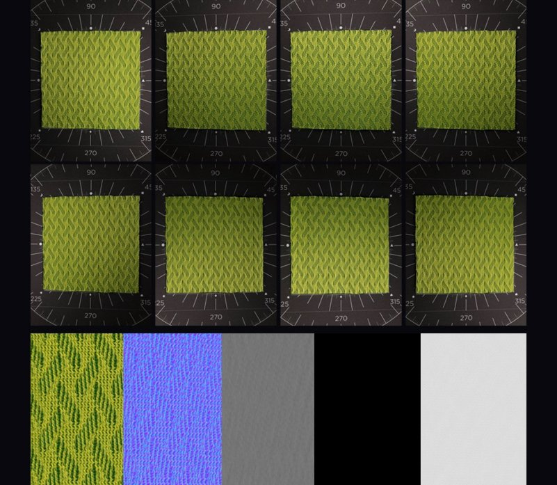
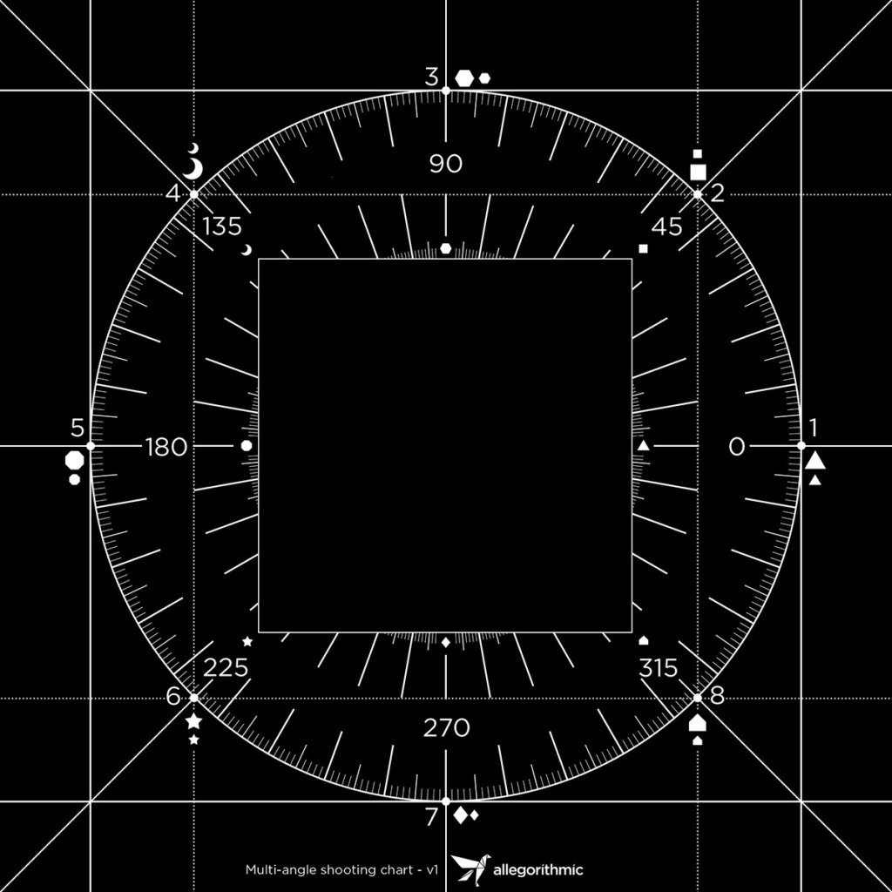
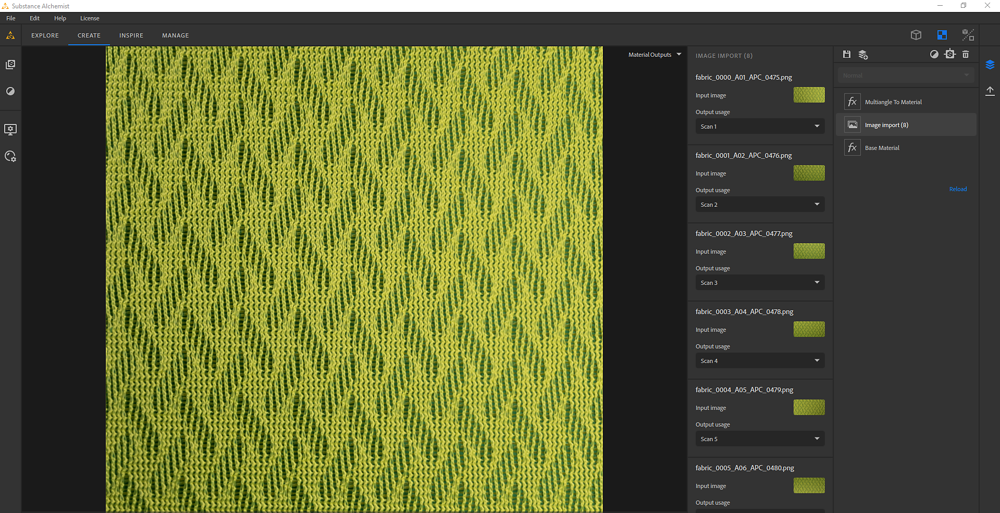
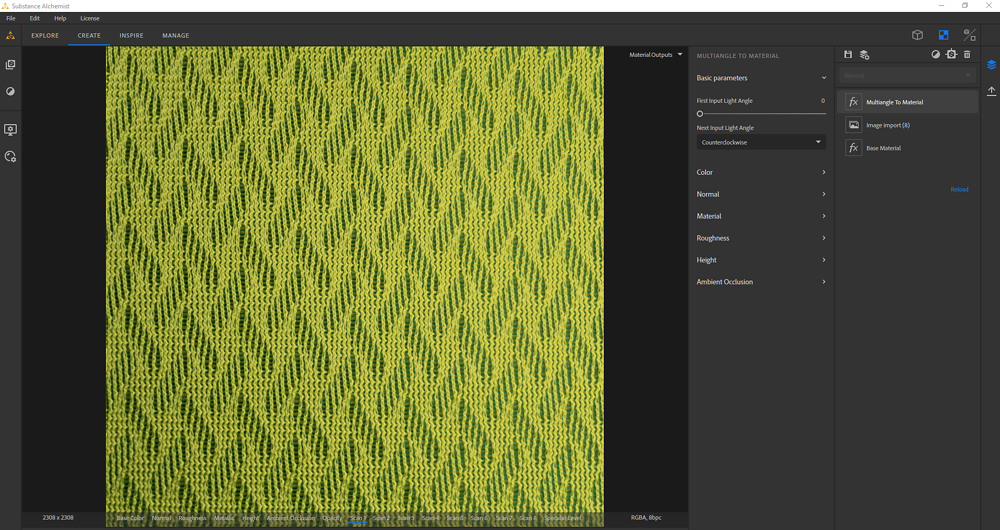

The Multiangle to Material template creates a material from 2 to 8 input images taken under specific light conditions. Such light conditions can be achieved with a material scanner.
You can find more information on how to create your own material scanner in this article.
Here is an example of a material created from 8 input images:

There are 3 things to set and configure to be sure the PBR channels will be extracted correctly:

When importing your images, verify in the Image Import Layer, that the 8 images are consecutive.
For example, the first image at 0° should be scan1 then the image at 45° should be scan2 ... then the image at 315° should be scan8

In the Multiangle to Material layer:
